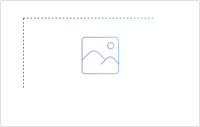

<section>
<div class="fodderAdd">
<Row >

	<Col span="1">
		<div>&nbsp;</div>
		<div class="backBtn" v-show="!isLivePlayer">
			<a href="javascript:void(0)">
				
			</a>
		</div>
	</Col>

	<Col span="14" class="liveColMain">
		<div class="liveAddH clearfix" v-show="!isLivePlayer" >

			<Form ref="formLiveVideo" :model="formLiveVideo" :rules="ruleLiveVideo" label-position="top">

				<!--选择流类型-->
				<Form-item label="" prop="modelLiveFlow">
					<RadioGroup v-model="formLiveVideo.modelLiveFlow" @on-change="pushpullChange">
						<Radio label="push">推流</Radio>
						<Radio label="pull">拉流</Radio>
					</RadioGroup>
				</Form-item>

				<!--输入流地址-->
				<!-- <Form-item label="" prop="liveFlowInput"> -->
				<!-- pushurl -->
				<div class="liveFlowInput">
						<Input v-model="formLiveVideo.pushurl" class="flowInput" v-show="formLiveVideo.modelLiveFlow == 'push'" placeholder="Enter something..." readonly ></Input>
						<Input v-model="formLiveVideo.liveFlowInput" class="flowInput" v-show="formLiveVideo.modelLiveFlow == 'pull'" placeholder="Enter something..." @on-change="liveInputChange"></Input>
					
					<Tooltip placement="top" content="分享" v-show="formLiveVideo.modelLiveFlow == 'push'">
					<Poptip placement="bottom" v-model="visible1" >
						
						<div slot="content">
							<canvas id="videoShareUrl"></canvas>
						</div>
					</Poptip>
					</Tooltip>

					<Tooltip placement="top" content="直播" v-show="formLiveVideo.modelLiveFlow">
						<a href="javascript:void(0);" @click="togglePlayer" ></a>
					</Tooltip>
				</div>
				<!-- </Form-item> -->

				<!--输入题目-->
				<Form-item label="" prop="title" class="fodderAdd_title">
					<div class="fodderAdd_title_inp">
						<Input class="title-input" placeholder="请输入直播标题" v-model="formLiveVideo.title" @on-change="getTitleContent" :maxlength="titleMaxCount"></Input>
						<span class="inputNum"><span>{{titleContentCount}}</span>/22</span>
					</div>
				</Form-item>

				<!--输入简介-->
				<Form-item label="" prop="introduction" class="fodderAdd_jianjie">
					<p>直播简介</p>
					<div class="fodderAdd_jianjie_inp">
						<Input type="textarea" :autosize="{minRows: 7,maxRows: 7}" v-model="formLiveVideo.introduction" @on-change="getintroductionContent" :maxlength="introductionMaxCount"></Input>
						<span><span>{{introductionContentCount}}</span>/500</span>
					</div>
				</Form-item>

				<Form-item label="" prop="coverImage">
					<div class="liveCover clearfix">
						<div class="coverText">直播封面 <i>*</i></div>
						<div class="imgWrap">
							<cropper-upload :width="300" :height="200" :cropUploadSuccess="onSuccess" :cropUploadFail="onError" :maxSize="2048">
								<div class="headImgBox">
									
									
									<!--  -->
								</div>
							</cropper-upload>
						</div>
						<div class="scale">
							<p>图片比例为3/2</p>
						</div>
					</div>
				</Form-item>

				<!--栏目-->
				<Form-item label="" prop="catalog">
					<div class="channel clearfix">
						<div class="fl float-left">栏目<i>*</i></div>
						<div class="fl float-center">
							<div class="ch-caret ">
								<!-- <i></i> -->
								
								<Tooltip placement="top" content="栏目">
								<Poptip placement="bottom" v-model="visible2">
									<Input v-model="catalogSeletedArr" placeholder="请点击选择" class="catalogSeletedInput" readonly></Input>
									<!-- <div style="border:1px solid #333;width: 300px;height: 40px;" >{{catalogSeletedArr}}</div> -->
									<div slot="content" class="content-poptip">
										<div class="catalog-btn-div">请选择转发栏目：</div>
										<div class="content-poptip-scoll">
											<CheckboxGroup v-model="catalogSeletedId" @on-change="checkSelectd">
												<Checkbox :label="elem.id" :value="elem.id" v-for="elem in cataloginfoList" :key="elem.id"><span class="ivucheckboxinput">{{elem.name}}</span></Checkbox>
											</CheckboxGroup>
										</div>
									</div>
								</Poptip>
								</Tooltip>
								
							</div>
						</div>
					</div>
				</Form-item>

				<!--评论-->
				<Form-item label="" prop="comment">
					<div class="channel clearfix">
						<div class="fl float-left">评论</div>
						<div class="fl float-center">
							<i-switch  size="large" v-model="formLiveVideo.comment" @on-change="changeSwitchByComment"></i-switch>
						</div>
					</div>
				</Form-item>

				<!--直播回放-->
				<!-- <Form-item label="" prop="playBack">
					<div class="channel clearfix">
						<div class="fl float-left">直播回放</div>
						<div class="fl float-center">
							<i-switch  size="large" v-model="formLiveVideo.playBack" @on-change="changeSwitchByPlayBack"></i-switch>
						</div>
					</div>
				</Form-item> -->

				<!--直播时间-->
					<div class="channel clearfix">
						<div class="fl float-left">直播时间 <i>*</i></div>
						<div class="fl float-center">
							<Form-item label="" prop="daterange" style="display:inline-block;">
								<DatePicker :value="formLiveVideo.daterange" format="yyyy-MM-dd" type="daterange" placement="bottom-end" placeholder="选择日期" style="width: 180px" @on-change="changeDate"></DatePicker>
							</Form-item>
							<span style="display:inline-block;vertical-align:middle; margin:8px 0 0 10px;" >~</span>
							<Form-item label="" prop="timerange" style="display:inline-block;">
								<TimePicker :value="formLiveVideo.timerange" format="HH:mm:ss" type="timerange" placement="bottom-end" placeholder="选择时间" style="width: 150px;margin-left:10px;" @on-change="changeTime"></TimePicker>
							</Form-item>
						</div>
					</div>
			
				<!--提交-->
				<div class="channel clearfix" style="margin-top:50px;">
					<div class="fl float-center ch-sure">
						<Button class="subm" @click="handleSubmit('formLiveVideo')" >提交</Button>
						<Button class="canc" @click="handleReset('formLiveVideo')" >取消</Button>
					</div>
				</div>

			</Form>

		</div>

		<!-- 直播视频播发器 -->
		<div class="liveAddPlayer clearfix" v-show="isLivePlayer" >
			<div>&nbsp;</div>
			<div class="g_video_layout" >
				<div class="clearfix">
					<div class="fr togglePlayerBack" @click="togglePlayer"><Icon type="close"></Icon></div>
				</div>
				<div id="id_live_container" class="g_video_container" v-if="!isMudu" ></div>
				<iframe id="id_live_mudu_container" class="g_video_container" v-if="isMudu"  frameborder=0 :src="formLiveVideo.liveFlowInput" scrolling="no" width="100%" height="1" ></iframe>
			</div>
		</div>

	</Col>

	<Col span="9">
		<div class="fodderAside">
			<h4>图文直播</h4>
			<div class="fodWrap">

				<div v-for="(item,index) in datalistByAside" :key="item.id" class="divAside" :id="item.id" >
					<p class="time">{{item.addtime}}</p>
					<div class="catalogAside">
						
						<p v-html="item.content">{{item.content}}</p>
						<Button type="ghost" class="delete-btn" @click="deleteDatalByAside(item.id)" >删除</Button>
					</div>
				</div>

			</div>

			<edit-div @oninput="getLiveContent" @onimage="getLiveIamge" @onok="okEdit"></edit-div>

		</div>
	</Col>

</Row>
</div>
</section>
